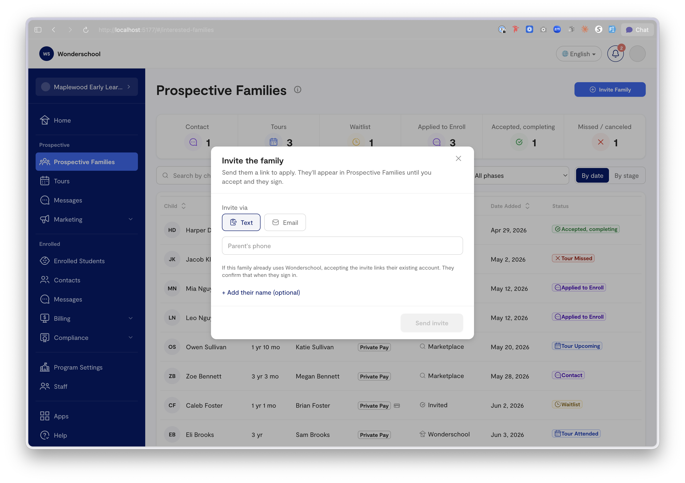
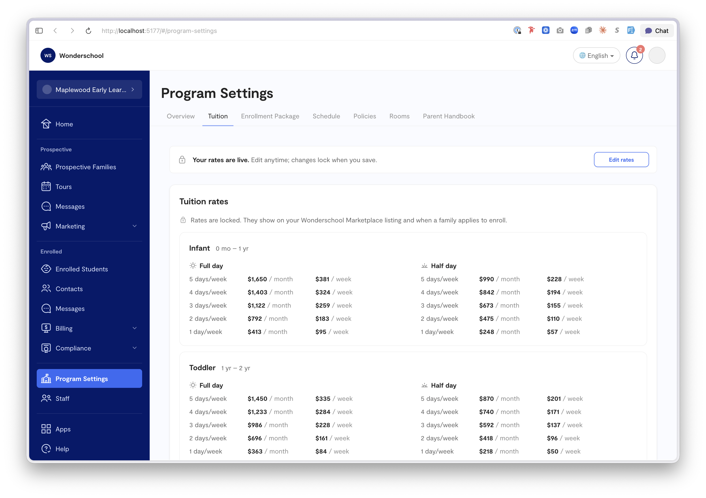
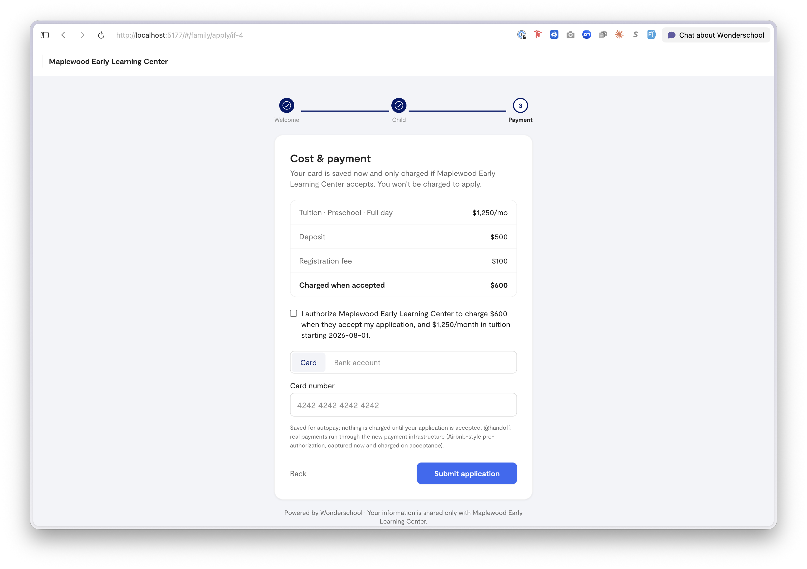

The problem
CCMS grew up around an "auto-enroll" model: a family's information flowing in essentially became a student. That made the roster the catch-all for everyone at every stage, blurred the line between a lead and an enrolled child, and gave providers little control over who landed where.
Reverse the flow. Interested families apply, pay a deposit to claim the spot, the provider reviews and accepts, and only then does the family complete the full profile. Families take ownership earlier, providers get a real decision point, and the data model stops conflating "maybe" with "enrolled." There's a second bet baked into that sequencing too: the sooner a family is on billing, the stickier the relationship, both to the provider and to the product.
What I designed
A new app shell plus a fully built-out flagship area spanning the provider side and the family side.
Information architecture
A persistent sidebar splits into daily-work nav (Home, Interested Families, Enrolled Students, Program Settings) and a pinned guidance tool (Tuition Coaching). The deliberate move: Interested Families and Enrolled Students are separate destinations. That single split is the whole thesis made navigable, leads live in one place, your roster in another, and nothing crosses over without a provider saying yes.
The leads model
Every lead is one row with a status that walks a clear track: interested in a tour → invited to enroll → applied → (provider accepts) → moves to Enrolled Students. A detail drawer shows the family's children, a chronological activity timeline, contact info, and the accept-and-enroll action. Provisional invites, a family recognized only by the email or phone they were invited at, are handled, because real intake is messy before it's tidy.

The two-phase family flow
Built first, because it's the heart of the bet. Phase 1, Apply: welcome → child's info and schedule → cost and payment, where the family sees the real total, agrees, pays the deposit, and saves a method. Provider reviews and accepts, the intentional pause, where sibling discounts and fees get sorted. Phase 2, Complete: sign documents → add guardians, emergency contacts, and approved pickups → health details. Then the child is enrolled.
Two decisions carry weight here. Payment comes before guardians and health, the provider needs a child, a schedule, and a committed deposit to decide; they don't need allergy details to say yes. That ordering also gets families onto billing as early in the relationship as possible, on the hypothesis that a family with a card on file and a deposit down is a family far more likely to stick around. And account creation is invisible: the invite link is a passwordless magic link, so no password screen interrupts a parent who's already been identified.
Tuition as a SKU, not a per-child guess
Rates are modeled per age tier and daypart, with provider-selectable billing cadences shown as columns in an editable rate grid. Set one annual rate and the month/week/day rates derive automatically, any cell overridable. Once saved, rates lock to display-only behind an "Edit rates" button with an amber warning, tuition is the kind of number you don't want to fat-finger. Rooms are pure age-range containers for physical placement; they deliberately don't drive price.

Onboarding reuses the editors
The guided setup flow (tuition → enrollment → schedule → policies → rooms → review) renders the exact same tab editors as Program Settings, one step at a time with a checklist rail, ending in a generated parent handbook. No duplicate logic, and a director who onboards already knows where everything lives afterward.

Craft decisions
The activity timeline on each lead turns "where is this family in the process" from a guess into a glance. Family-maintained profile sections are marked as such, with provider overrides tracked separately, encoding a real trust boundary. A demo toggle flips between an empty "new provider" dataset (lands in onboarding) and a populated "established" one, so the prototype tells both the cold-start and steady-state story.
What's real vs. mocked
The data model, leads workflow, two-phase enrollment, tuition-as-SKU, and every UI pattern are the real design. Payments, document signing, messaging, and notifications are mocked. This prototype carried the model into the payment-infrastructure review and serves as the build spec for the rebuild.
What's next
The billing and tuition section against real payment infrastructure is the likely first production workstream.